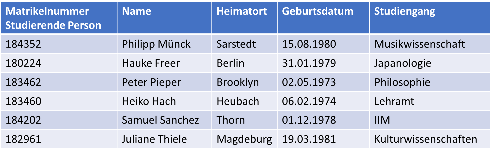

Datenmanipulation
Anhand der Beispieltabelle 'Studierende' der Datenbank unseres Universitäts-Informationssystems
werden nun die grundlegenden Funktionen von SQL demonstriert:

In der Praxis würde man als erstes die Datenbank mit Hilfe der SQL-DDL aufbauen. An dieser Stelle wird aber einfach davon ausgegangen, dass die Datenbank bereits existiert.
In diesem Lernsystem soll lediglich auf die Möglichkeiten der DML eingegangen werden, da ihr aus Anwendersicht die größte Bedeutung beim Umgang mit Datenbanken zukommt. Mit Hilfe der DML können Datensätze eingefügt, gelöscht, aktualisiert und abgefragt werden.